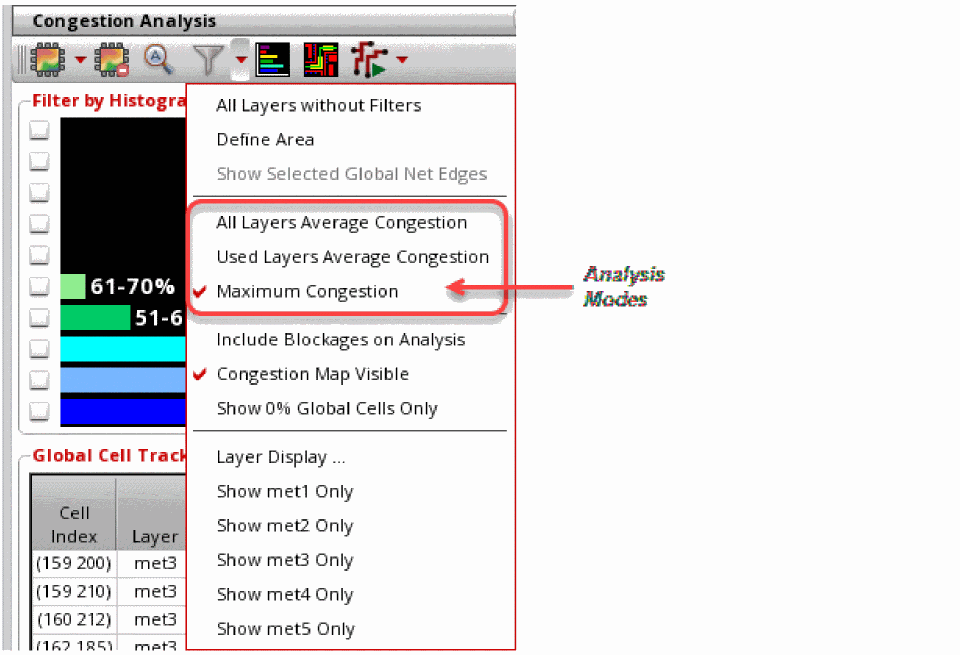
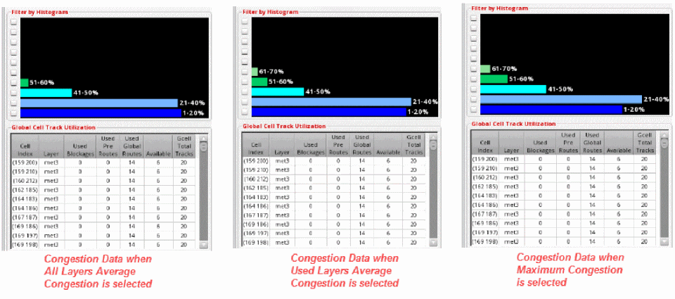

Filtering by Analysis Modes
Usually, the average congestion across all layers in a design is displayed on the heat map. However, this can be misleading. To correctly analyze the congestion across all layers and display it on the heat map, you can change the analysis mode. To do this:
- Click the drop-down arrow next to the Filter Global Cells by icon on the Congestion Analysis toolbar.
-
Choose the analysis mode from the drop-down list box, as shown in the following figure.
The three analysis modes to view congestion on the heat map are:-
All Layers Average Congestion
For each gcell, calculates the average congestion for all horizontal and vertical layers and colors the gcell based on the average computed percentage. -
Used Layers Average Congestion
For each gcell, calculates the average congestion for all horizontal and vertical layers that have global routing and colors the gcell based on the average computed percentage. -
Maximum Congestion
For each gcell, calculates the maximum congested percentage for all horizontal and vertical layers and colors the gcell based on the maximum congested percentage. This is the default analysis mode.
You can view variations in the congestion data in the heat map, the histogram, and the global cell track utilization table. The view in the heat map, histogram, and the global cell track utilization table changes to display the variation in congestion data when you switch between the three analysis modes.
 -
All Layers Average Congestion
Related Topics
Running Global Routing and Congestion Analysis
Return to top